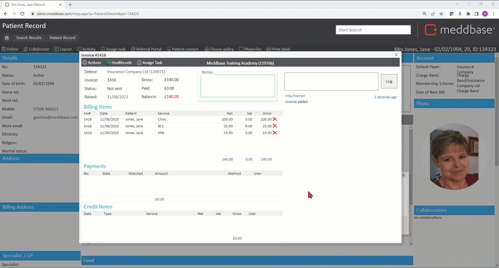
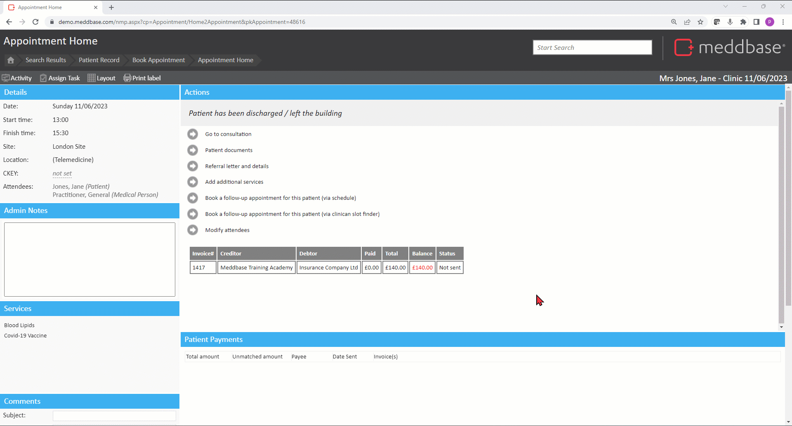
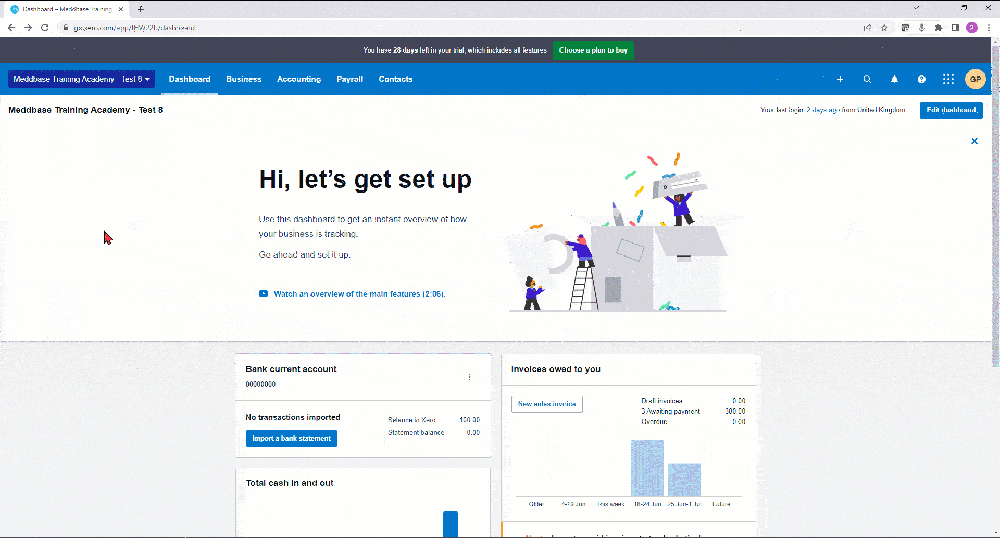
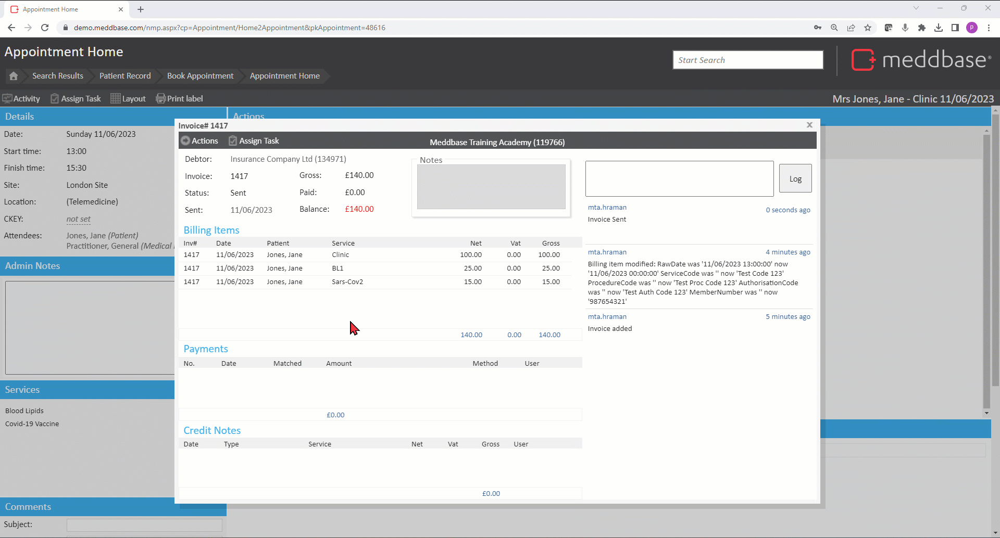

Xero’s online accounting software connects small business owners with their numbers, their bank, and advisors anytime.
What is the purpose of the article?
This article will walk you through some of the actions you can take on an invoice in Meddbase and how Meddbase communicates with Xero. The following topics will be covered:
By clicking 'Generate invoices' on the Appointment Home page.
You can choose the invoice generation mode under Admin > Configuration > Accountancy > Invoice generation.
Furthermore, you can generate an invoice :
Via the Patient Record page by clicking Raise bill for products and services (a Patient Charge Band must be set up with (a) Price List(s) and provided service(s).
or
Adding Additional services to an appointment where the invoice has already been 'Marked as sent'
Via the Company Details page by clicking Bill Company for Products and Services*
*To charge a 3rd party company for products and services outside the context of an appointment, that company must have a Charge Band set up with a Price List and provided services, as well as the Debtor Type set to Company Only.
Mark Invoice as 'Sent' in Meddbase
Once an invoice has been generated, it's Status is by default Not Sent (with the exception of 3rd party companies billing the chamber company) and a number of variations can still be made, including:
Adding/removing billing items.
Changing the cost of services.
Changing the name(s) of services.
Adding/changing codes associated with the service.
Applying discounts.
Assign billing items to new invoices.

These details are only finalised once the invoice has been marked as 'Sent.
1. Click ‘Actions’ in the top left followed by ‘Mark Sent’.You will be provided with one of two options:
Use today’s date - Mark the invoice as sent from the current date.
Select another date - Mark this invoice as sent retrospectively.
Once you select an option you will see a pop-up warning informing you that once an invoice is sent it can not be deleted or modified later.
2. Click Yes to confirm and change the invoice Status to Sent.

This invoice will now be sent to Xero, including details:
Invoice number.
Debtor name.
Date.
Due amount.
Service code (if captured/set up in Meddbase).
Authorisation code (if captured/set up in Meddbase).
Patient member number (if captured/set up in Meddbase).
Furthermore, new Debtors will be added as Customers under Contacts.
To view the invoice:
Log in to your Xero Dashboard.
Click Business.
Click Invoices.
Click on the relevant invoice.

Make Payment on Invoice in Meddbase
Once an invoice has been marked as sent, you may proceed to add a payment to the invoice.
Go to the invoice you wish to add a payment to:-
Click the Actions button and you will find a new list of options including:
Debt Management - bring up the outstanding debt dialogue and contact information for the patient.
Make Payment - make a payment on the invoice.
Raise Credit Note - credit an incorrect invoice with a credit note.
Print Preview - print the invoice off for sending via post.
Copy Invoice - create an unsent copy of the invoice to correct any errors.
Shortfall - shortfall the remaining balance of an invoice from one debtor to another.
Email Invoice - send the invoice via email to the patient/company.
Match Advanced Payments - search the patient’s/company's account for advanced payments to use against the balance of the invoice.
Click Payments.
Click Make Payment. The payment dialogue displayed allows you to add a wealth of information regarding the payment including:
The amount.
Payment method.
Site.
Location.
Comments.
and more...
Fill in the details as is appropriate and click Save to save the payment. Upon saving a payment will see a pop-up warning informing you that once a payment is saved it can not be deleted or modified later. Once saved you will be presented with a receipt which can be printed for a customer copy.
Close this dialogue to show that the invoice now reflects the payment and updated total.

This payment will now be visible in Xero on the relevant invoice.
Click the Prepayment link to view the payment details.